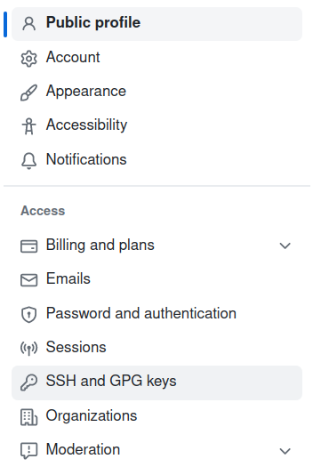
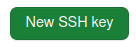
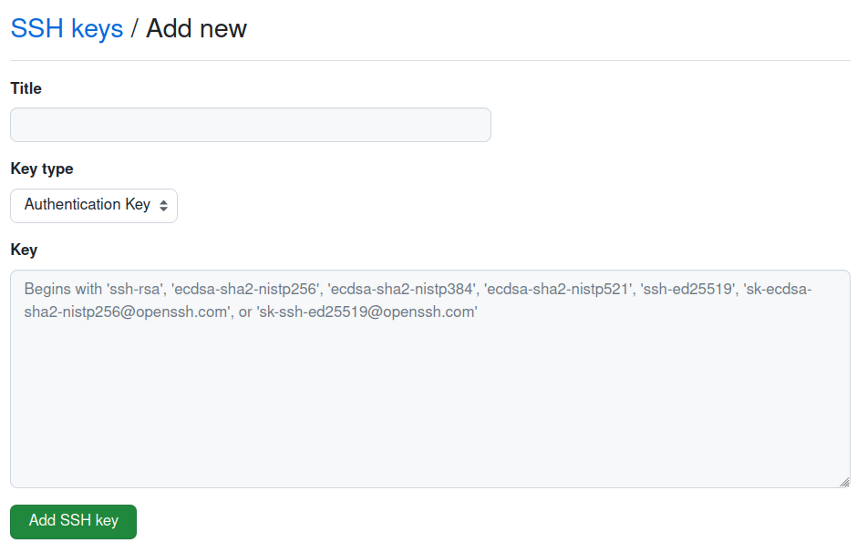

Utilisez Github avec VSCode

Pour automatiser les push vers GitHub en utilisant une clé SSH sans avoir à entrer de mot de passe, vous pouvez suivre les étapes suivantes :
1. Créer votre répertoire local
Commencons par créer une répertoire à la racine du serveur apache. Si vous utlisez un autre serveur http, référez vous à sa documentation pour connaitre l'emplacement de la racine du serveur http.
mkdir /var/www/html/mon_site
2. Activez le suivi de version en local
cd /var/www/html/mon_site
git init
3. Faite votre premier "commit"
- Si vous possédez un site, copiez votre fichiers dans le répertoire /var/www/html/mon_site
- Sinon, au pire des cas créer un fichiers index.hml vide
git status
La liste des changements devrait s'afficher.
Ajoutez tous vos fichiers à la "stagging area" (liste des tâches à réaliser à la prochaine
validation)
git add .
Validez votre premier "commit"
git commit -m "Validation initiale"
4. Ajouter une branche distante
La commande
git remote add origin git@github.com:[nom_utilisateur]/[nom_du_depot].git permet
d'ajouter un nouveau dépôt distant ("remote") à un projet Git existant.
Ici le dépôt distant est nommé "origin", et utilise l'URL
git@github.com:[nom_utilisateur]/[nom_du_depot].git pour spécifier l'emplacement distant
GitHub.
- Notez que :
- [nom_utilisateur] doit être remplacé par votre nom d'utilisateur GitHub
- [nom_du_depot] doit être remplacé par le nom de votre dépôt sur GitHub.
- commande est généralement utilisée lors de la première mise en place d'un projet Git sur GitHub.
Afficher vos branches distantes.
git remote -v5. Utiliser une branche distante.
La commandegit push --set-upstream origin master est utilisée pour envoyer les
modifications locales d'une branche
nommée "master" vers une branche distante nommée "origin/master". Cette commande configure également
la branche locale
"master" pour suivre la branche distante "origin/master", de sorte que les futures commandes "git
push" et "git pull" se
réfèreront automatiquement à cette branche distante.
Voici un bref résumé de chacun des éléments de la commande :
"git push" : commande Git pour envoyer des modifications locales vers une branche distante.
"--set-upstream" : option pour définir une branche distante en tant que branche de suivi pour la
branche locale.
"origin" : nom de la branche distante vers laquelle les modifications seront envoyées.
"master" : nom de la branche locale qui sera envoyée vers la branche distante nommée
"origin/master".
La commande git push --set-upstream origin master permet de pousser votre branche
locale nommée "master" vers la branche "master" du référentiel distant "origin" sur GitHub. Elle
permet également de configurer votre branche locale "master" pour qu'elle suit la branche
"master" du dépôt distant "origin".
Plus précisément, l'option --set-upstream est utilisée pour définir une "relation de
suivi" entre votre branche locale et une branche distante. Cela signifie que lorsque vous
utilisez la commande git pull ou git fetch, Git sait où aller chercher
les mises à jour pour votre branche locale.
La première fois que vous poussez une branche locale vers un dépôt distant, vous devez utiliser
l'option --set-upstream pour configurer la relation de suivi. Ensuite, vous pouvez
simplement utiliser la commande git push pour pousser vos modifications vers le
dépôt distant.
En utilisant origin master, vous indiquez que vous voulez pousser la branche locale "master" vers la branche "master" du dépôt distant nommé "origin".
6. Automatiser les connexion avec une clé SSH
- Générez une clé SSH en utilisant la commande ssh-keygen. Si vous possédez déjà une clé et que vous souhaitez l'utilisez, passez à l'étape suivante. Sinon suivez les étapes et répondez aux questions posées par la commande key-gen
- Ajoutez la clé publique à votre compte GitHub en accédant à vos paramètres de compte, en sélectionnant "Clés SSH et GPG" et en ajoutant la clé publique. 
- Ajoutant la clé publique en cliquant sur le bouton "Nouvelle clé SSH". 
- a) Nommez votre nouvelle clé (Title)
b) Copiez/collez le contenu de votre clé publique (id_rsa.pub) SSH" (Key)
c) Ajouter votre clé.

- Utilisez la commande
git configpour configurer Git afin d'utiliser votre clé SSH. - Vous pouvez maintenant pousser vos modifications vers GitHub en utilisant la commande git push. Vous ne serez pas invité à entrer votre mot de passe car Git utilisera automatiquement votre clé SSH. Remarque : Assurez-vous de garder votre clé privée en sécurité sur votre ordinateur. Ne partagez jamais votre clé privée avec d'autres personnes.
ssh-keygen
git config --global user.email "votre_email@exemple.com"
git config --global user.name "votre_nom_utilisateur"
git config --global core.sshCommand "ssh -i ~/.ssh/id_rsa"
Remplacez votre_email@exemple.com par votre adresse e-mail et votre_nom_utilisateur par votre
nom d'utilisateur GitHub.